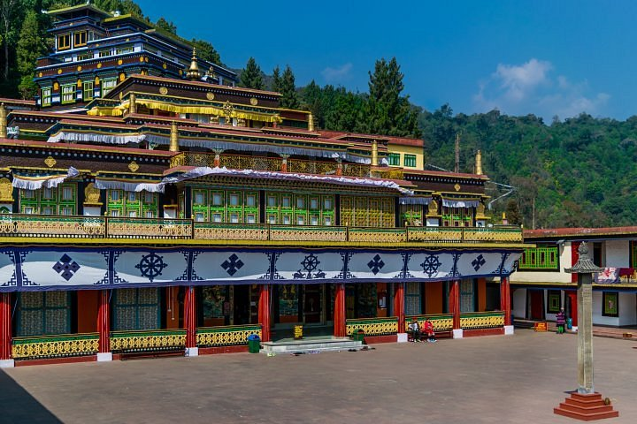
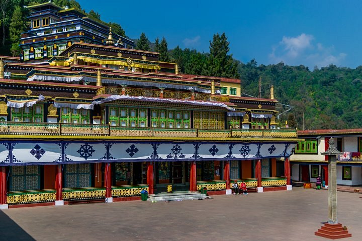

North Sikkim: Sightseeing overloaded!
North Sikkim is as fascinating as East Sikkim when it comes to tourism. It is also suitable for a family holiday for the numerous sightseeing opportunities involved. You could visit Lachung, a scenic village by the side of River Lachung. Yumthang is famous for being a valley of rhododendron flowers & hot springs.
North Sikkim also receives heavy snowfall during December. This is a good time to visit it to enjoy the snowfall. The temperature often falls below zero. The entire landscape is covered by snow. Everything is white!
Just near to Yumthang lies Zero Point, the last destination for civilians before China’s border. It’s also home to one of the highest lakes in the world, Gurudongmar Lake, at almost 17,800 feet. Khangchendzonga National Park, a UNESCO World Heritage Site, is located in this district.
It’s both a national park and a biosphere reserve. You get to see rare Himalayan wildlife species like Himalayan Tahr, Himalayan Blue Sheep, Himalayan Black Bear, Tibetan Wild Ass & red panda.
East Sikkim: Cable car rides, monasteries & Gangtok!
The top tourism attractions in East Sikkim are Gangtok, Tsomgo Lake, Baba Mandir, Nathu La Pass & Zuluk. Gangtok attracts honeymoon couples in large numbers. It is beautiful and exciting, with a lot of activities on offer. You are treated to surreal views of Mt. Khangchendzonga. A sightseeing tour includes Buddhist monasteries, art & craft centers & cable car rides.
 
 South Sikkim: Culture, nature and adventure!
A Sikkim tour is incomplete without visiting South Sikkim. Its surreal beauty ensures that it’s included in any Sikkim travel guide. It is home to Namchi, famously known as the cultural & religious hub of Sikkim. Two famous tourist sites are the 108 feet statue of Lord Shiva & 118 feet statue of Guru Padmasambhava. Ornithologists & bird watchers definitely visit Ravangla in South Sikkim.
Several rare bird species like dark-throated thrush, babblers & cuckoos can be spotted. Sikkim’s only tea estate, Temi Tea Garden, is situated here. Go camping in Sikip, visit a holy cave in Rabong and enjoy trekking with spotting wildlife at Maenam Wildlife Sanctuary.
West Sikkim: The embodiment of Sikkim’s beauty!
West Sikkim has its own treasure of travel attractions waiting to be explored. There’s tourist attractions like Pelling, a small hill town. Its landscape is dotted with monasteries, lakes and waterfalls. You are offered mesmerising views of Mt. Khangchendzonga.
Other places to explore in Pelling are the holy lake & Asia’s second highest suspension bridge. Other tourist places are Kaluk & Rinchenpong, both drawing visitors for their dreamy beauty. Yuksom, which serves as the base for Dzongri & Goecha La treks, is also situated in West Sikkim.